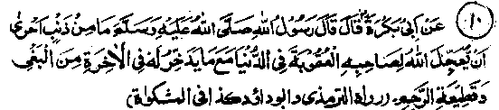

Chapter Three · Section (d): Ahadith concerning maintenance of kinship
9. Retribution of severing family bonds in this world

Hadith 10
Rasulullah Sallallaho alaihe wasallam said, "There is no sin for which the doer more deserves punishment in this world, in addition to that reserved for him in the Akhirah, than the committing of oppression and severing kinship.
Note: The Hadith means that the two sins, oppression and severing family bonds, are more readily punished in this world (in addition to the punishment in the Akhirah) than any other sin. Another Hadith says: Of all the sins, Allah Ta'ala forgives whichever He likes except the sin of severing kinship with one’s parents, which is punished in this life before the death of the sinner”. (Mishkaat). Still another Hadith says, "The punishment for every sin is delayed by Allah Ta'ala till the Day of Resurrection, except for the sin of undutifulness to parents, the doer of which is readily punished in this world. (Jami-us-Sagheer). There are quite a few Ahadith to the effect that, on the Day of Judgement, Allah Ta'ala will grant ‘Rehem’ (a symbol of kinship) the power to speak; it will catch hold of the Throne (‘Arsh) of Allah Ta'ala an beseech Him repeatedly, thus, "O Allah, grant your reconciliation to him who reconciled with me, and ignore him who ignored me! "Also there are several Ahadith which report Allah Ta'ala as saying, ‘Rehem’ (symbol for family bonds) is a derivative of Ar-Rahman (The Compassionate one), one of My Attributive Names. I, who am Rahman, shall look after him who looks after kinship; and ignore him who ignores family kinship. It occurs in another Hadith that Allah’s Mercy does not descend upon a people among whom there is a person who has severed ties with his kinsmen. Another Hadith reports Rasulullah Sallallaho alaihe wasallam as saying, "Men’s deeds are submitted to Allah Ta'ala every Thursday, but no good act is accepted from a person who severs family connections." (Durre Manthur)
Faqih Abul-Laith Rahmatullah alaihe says: "The sin of a person severing family bonds is the most abominable one; so much so that those who sit in company with him are also deprived of blessings from Allah Ta'ala. Therefore, everyone must repent of this sin, as soon as possible, and make efforts to reunite ties of relationship with his kinsmen. For, Rasulullah Sallallaho alaihe wasallam has said, ‘There is no virtue more readily rewarded than the act of reuniting family bonds; and there is no sin of which the doer is more readily punished in this world, besides having punishment stored up for him in the Akhirah, than the one committing oppression and the one severing ties of kinship." (Tanbeh-ul-Ghafileen). One day after Fajr Salaat, Abdullah Ibne Masoud Radhiallaho anho was sitting in company with a number of people when he said, "O people, take an , oath, if anyone of you has severed ties of relationship with his kinsmen, he should go away and leave us alone. For, we are going to beseech a favour of Allah Ta'ala and the gates of the heavens are closed for him who has broken kinship". (Targheeb) He meant that the prayers of such a person do not reach the heavens, because the doors of the heavens are closed even before his Dua’a reaches there. And, if their prayers also went up along with his, all would be turned back from the heavens.
There are many other Traditions on this subject and numerous incidents occurring in this world testify to the fact that a person severing relations with his family, falls a prey to misfortunes and feels miserable throughout his life. In their ignorance, such people do not realize that, howsoever hard they struggle, they will not find an escape from their misery (which is a consequence of the breach in family-bonds) unless they repent and compensate the wrong. And if, under the evil influence of this sin, a man begins to practice something irreligious, taking it to be a genuine act of religion, it will be far more harmful for him, as he might die without entertaining a thought of repentance (why should he repent of what he believes to be a virtue?) May Allah, in His infinite Bounty, grant us protection!